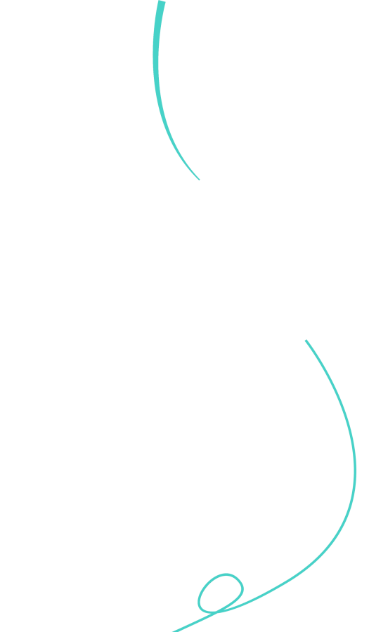
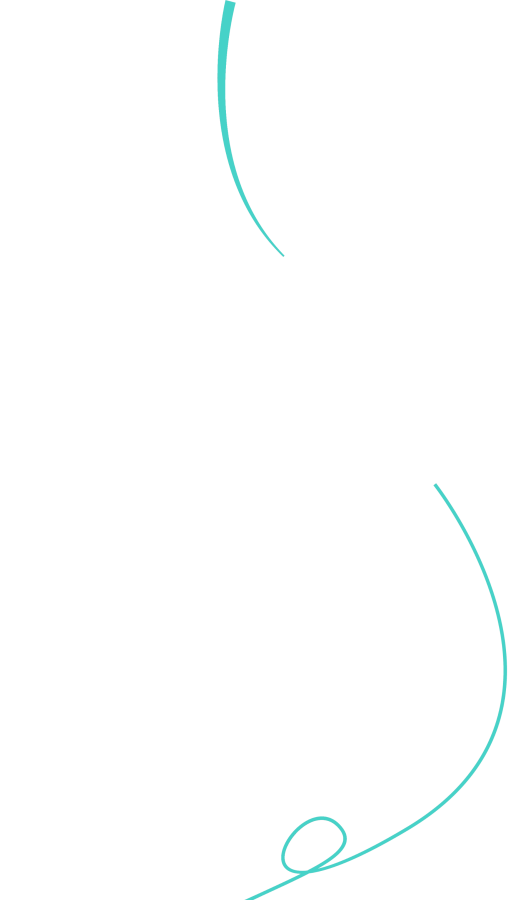
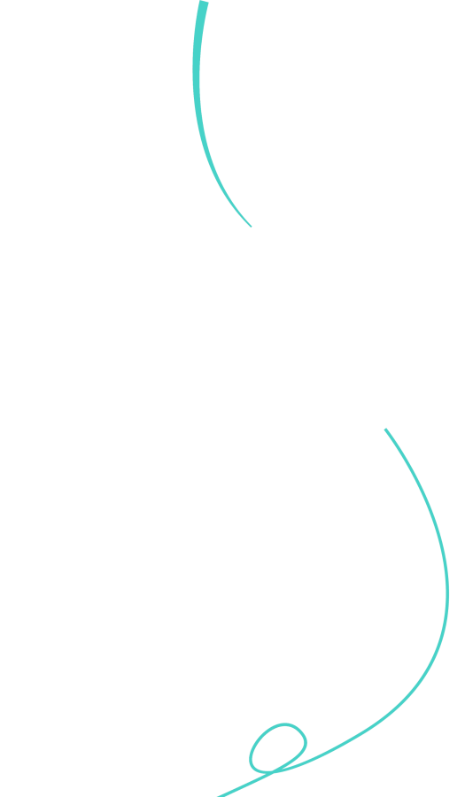

织锦缎旗袍
面料
织锦缎，传统丝织面料，以缎纹为地、多色丝纬提花织造，花纹精致、色泽绚丽、质地紧密挺括，尽显高贵华丽
面料特点
多色丝纬提花织造，花纹精细、色彩绚丽、光泽感强，具民族风格；质地紧密挺括、色牢度好，尽显高贵；原料多样；工艺复杂价高，需避碱、高温及细心养护。
注意事项
宜干洗，手洗用中性洗涤剂低温轻搓、忌机洗 / 碱 / 高温，深浅分洗；阴干 / 低温烘干、避暴晒；低温垫布熨烫；避油渍、动作轻防钩丝；清洁后单独悬挂 / 防尘袋存放于干燥处、防潮。
 
